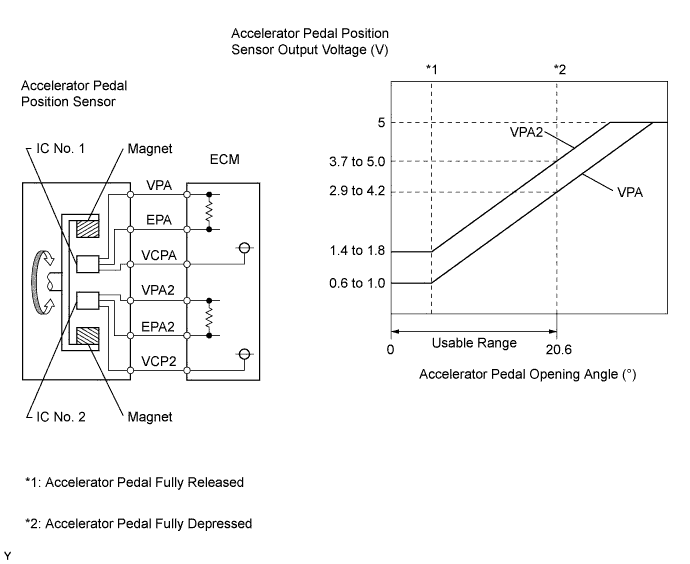
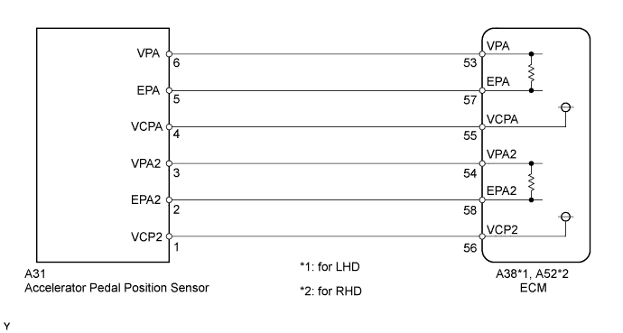
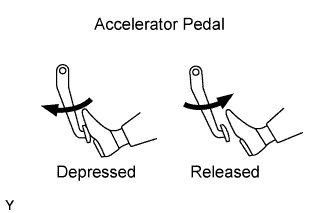
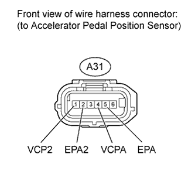

DTC P2120 Throttle / Pedal Position Sensor / Switch "D" Circuit |
DTC P2122 Throttle / Pedal Position Sensor / Switch "D" Circuit Low Input |
DTC P2123 Throttle / Pedal Position Sensor / Switch "D" Circuit High Input |
DTC P2125 Throttle / Pedal Position Sensor / Switch "E" Circuit |
DTC P2127 Throttle / Pedal Position Sensor / Switch "E" Circuit Low Input |
DTC P2128 Throttle / Pedal Position Sensor / Switch "E" Circuit High Input |
DTC P2138 Throttle / Pedal Position Sensor / Switch "D" / "E" Voltage Correlation |

| DTC Detection Drive Pattern | DTC Detection Condition | Trouble Area |
Engine switch on (IG)
| Condition (a) continues for 0.5 seconds (1 trip detection logic): (a) VPA is less than 0.4 V and VPA2 is more than 0.97 deg, or VPA is more than 4.8 V. |
|
| DTC Detection Drive Pattern | DTC Detection Condition | Trouble Area |
Engine switch on (IG)
| Condition (a) and (b) continue for 0.5 seconds (1 trip detection logic): (a) VPA is less than 0.4 V. (b) VPA2 is more than 0.97 deg. |
|
| DTC Detection Drive Pattern | DTC Detection Condition | Trouble Area |
Engine switch on (IG)
| Condition (a) continues for 2.0 seconds (1 trip detection logic): (a) VPA is more than 4.8 V. |
|
| DTC Detection Drive Pattern | DTC Detection Condition | Trouble Area |
Engine switch on (IG)
| Condition (a) continues for 0.5 seconds (1 trip detection logic): (a) VPA2 is less than 1.2 V and VPA is more than 2.7 deg, or VPA2 is more than 4.8 V and VPA is more than 0.4 V but less than 3.45 V. |
|
| DTC Detection Drive Pattern | DTC Detection Condition | Trouble Area |
Engine switch on (IG)
| Condition (a) and (b) continue for 0.5 seconds (1 trip detection logic): (a) VPA2 is less than 1.2 V. (b) VPA2 is more than 2.7 deg. |
|
| DTC Detection Drive Pattern | DTC Detection Condition | Trouble Area |
Engine switch on (IG)
| Conditions (a) and (b) continue for 2.0 seconds (1 trip detection logic): (a) VPA2 is more than 4.8 V. (b) VPA is more than 0.4 V but less than 3.45 V. |
|
| DTC Detection Drive Pattern | DTC Detection Condition | Trouble Area |
Engine switch on (IG)
| Condition (a) or (b) continues for 2.0 seconds (1 trip detection logic): (a) The difference between VPA and VPA2 is less than 0.02 V. (b) VPA is less than 0.4 V and VPA2 is less than 1.2 V. |
|
| DTC No. | Data List |
| P2120 |
|
| P2122 | |
| P2123 | |
| P2125 | |
| P2127 | |
| P2128 | |
| P2138 |
| Trouble Area | Accelerator Pedal Position Expressed as Voltage Output | |||
| Accelerator Pedal Released | Accelerator Pedal Depressed | |||
| Accel Position 1 | Accel Position 2 | Accel Position 1 | Accel Position 2 | |
| VC circuit open | 0 to 0.2 V | 0 to 0.2 V | 0 to 0.2 V | 0 to 0.2 V |
| VPA circuit open or ground short | 0 to 0.2 V | 1.2 to 2.0 V | 0 to 0.2 V | 3.4 to 5.0 V |
| VPA2 circuit open or ground short | 0.5 to 1.1 V | 0 to 0.2 V | 2.9 to 3.6 V | 0 to 0.2 V |
| EPA circuit open | 4.5 to 5.0 V | 4.5 to 5.0 V | 4.5 to 5.0 V | 4.5 to 5.0 V |

| 1.READ VALUE USING INTELLIGENT TESTER (ACCELERATOR PEDAL POSITION) |
 |
Connect the intelligent tester to the DLC3.
Turn the engine switch on (IG) and turn the tester on.
Enter the following menus: Powertrain / Engine / Data List / Accel Position 1 and Accel Position 2.
Read the values.
| Accelerator Pedal | Accel Position 1 | Accel Position 2 |
| Released | 0.6 to 1.0 V | 1.4 to 1.8 V |
| Depressed | 3.4 to 3.8 V | 4.2 to 4.6 V |
| Result | Proceed to |
| NG | A |
| OK | B |
|
| ||||
| A | |
| 2.CHECK HARNESS AND CONNECTOR (ACCELERATOR PEDAL POSITION SENSOR - ECM) |
 |
Disconnect the accelerator pedal position sensor connector.
Disconnect the ECM connector.
Measure the resistance according to the value(s) in the table below.
| Tester Connection | Condition | Specified Condition |
| A31-1 (VCP2) - A38-56 (VCP2) | Always | Below 1 Ω |
| A31-2 (EPA2) - A38-58 (EPA2) | Always | Below 1 Ω |
| A31-3 (VPA2) - A38-54 (VPA2) | Always | Below 1 Ω |
| A31-4 (VCPA) - A38-55 (VCPA) | Always | Below 1 Ω |
| A31-5 (EPA) - A38-57 (EPA) | Always | Below 1 Ω |
| A31-6 (VPA) - A38-53 (VPA) | Always | Below 1 Ω |
| Tester Connection | Condition | Specified Condition |
| A31-1 (VCP2) - A52-56 (VCP2) | Always | Below 1 Ω |
| A31-2 (EPA2) - A52-58 (EPA2) | Always | Below 1 Ω |
| A31-3 (VPA2) - A52-54 (VPA2) | Always | Below 1 Ω |
| A31-4 (VCPA) - A52-55 (VCPA) | Always | Below 1 Ω |
| A31-5 (EPA) - A52-57 (EPA) | Always | Below 1 Ω |
| A31-6 (VPA) - A52-53 (VPA) | Always | Below 1 Ω |
| Tester Connection | Condition | Specified Condition |
| A31-1 (VCP2) or A38-56 (VCP2) - Body ground | Always | 10 kΩ or higher |
| A31-2 (EPA2) or A38-58 (EPA2) - Body ground | Always | 10 kΩ or higher |
| A31-3 (VPA2) or A38-54 (VPA2) - Body ground | Always | 10 kΩ or higher |
| A31-4 (VCPA) or A38-55 (VCPA) - Body ground | Always | 10 kΩ or higher |
| A31-5 (EPA) or A38-57 (EPA) - Body ground | Always | 10 kΩ or higher |
| A31-6 (VPA) or A38-53 (VPA) - Body ground | Always | 10 kΩ or higher |
| Tester Connection | Condition | Specified Condition |
| A31-1 (VCP2) or A52-56 (VCP2) - Body ground | Always | 10 kΩ or higher |
| A31-2 (EPA2) or A52-58 (EPA2) - Body ground | Always | 10 kΩ or higher |
| A31-3 (VPA2) or A52-54 (VPA2) - Body ground | Always | 10 kΩ or higher |
| A31-4 (VCPA) or A52-55 (VCPA) - Body ground | Always | 10 kΩ or higher |
| A31-5 (EPA) or A52-57 (EPA) - Body ground | Always | 10 kΩ or higher |
| A31-6 (VPA) or A52-53 (VPA) - Body ground | Always | 10 kΩ or higher |
|
| ||||
| OK | |
| 3.INSPECT ECM TERMINAL VOLTAGE (VCPA AND VCP2 TERMINALS) |
 |
Disconnect the accelerator pedal position sensor connector.
Measure the voltage according to the value(s) in the table below.
| Tester Connection | Condition | Specified Condition |
| A31-4 (VCPA) - A31-5 (EPA) | Engine switch on (IG) | 4.5 to 5.5 V |
| A31-1 (VCP2) - A31-2 (EPA2) | Engine switch on (IG) | 4.5 to 5.5 V |
|
| ||||
| OK | |
| 4.REPLACE ACCELERATOR PEDAL ROD ASSEMBLY |
Replace the accelerator pedal rod assembly (Click here).
| NEXT | |
| 5.CHECK IF OUTPUT DTC RECURS |
Connect the intelligent tester to the DLC3.
Clear the DTC (Click here).
Turn the engine switch off.
Turn the engine switch on (IG).
Fully close the accelerator pedal for 3 seconds, then hold it partway open for 3 seconds, then fully open it for 3 seconds.
Read the DTCs.
| Result | Proceed to |
| P2120, P2122, P2123, P2125, P2127, P2128 and/or P2138 are output again | A |
| No output | B |
|
| ||||
| A | |
| 6.REPLACE ECM |
Replace the ECM (Click here).
|
| ||||
| 7.REPAIR OR REPLACE HARNESS OR CONNECTOR |
| NEXT | |
| 8.CONFIRM WHETHER MALFUNCTION HAS BEEN SUCCESSFULLY REPAIRED |
Connect the intelligent tester to the DLC3.
Clear the DTCs (Click here).
Turn the engine switch off.
Turn the engine switch off and leave the vehicle for 15 seconds.
Turn the engine switch on (IG).
Fully close the accelerator pedal for 3 seconds, then hold it partway open for 3 seconds, then fully open it for 3 seconds.
Confirm that the DTC is not output again.
Enter the following menus: Powertrain / Engine / Utility / All Readiness.
Input DTC P2120, P2122, P2123, P2125, P2127, P2128 and/or P2138.
Check that STATUS is NORMAL. If STATUS is INCOMPLETE or UNKNOWN, idle the engine.
| NEXT | ||
| ||